별별하루
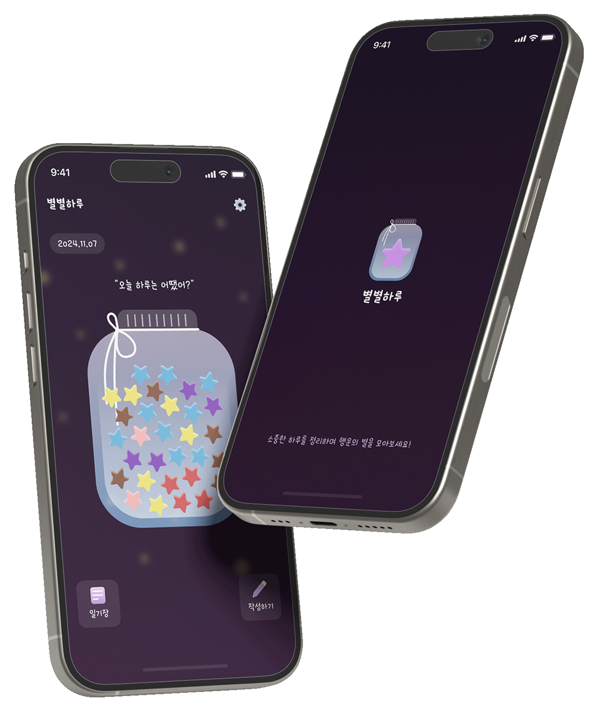
About Project
-
프로젝트 기간:
25.12.01 ~ 26.02.28
-
프로젝트 인원:
2명 (기획, 디자인: 김**, 기획 & 퍼블 & 개발: 조정원)
-
역할 (담당 업무):
1. 기획서 작성 50%
2. UI 퍼블리싱 100%
3. 프론트엔드 개발 100% -
프로젝트 설명:
하루에 하나씩 별을 접어 작은 병에 차곡차곡 담아가는, 기록을 추억으로 남기는 감성 웹 애플리케이션입니다.
일상의 조각을 별빛으로 바꾸어, 시간이 흐를수록 더 빛나는 나만의 우주를 만들어갑니다. ✨ -
기술 스택:
- Next.js
- Typescript
- Supabase
- Tailwind CSS (UI 스타일링) - URL:
Publishing Guide
Theme Color (Dark Theme / Light Theme)
-
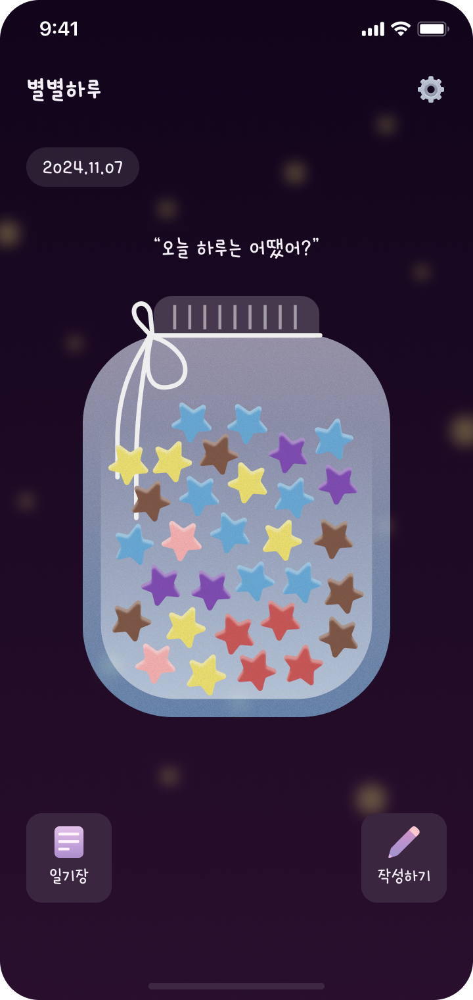
Dark Mode -
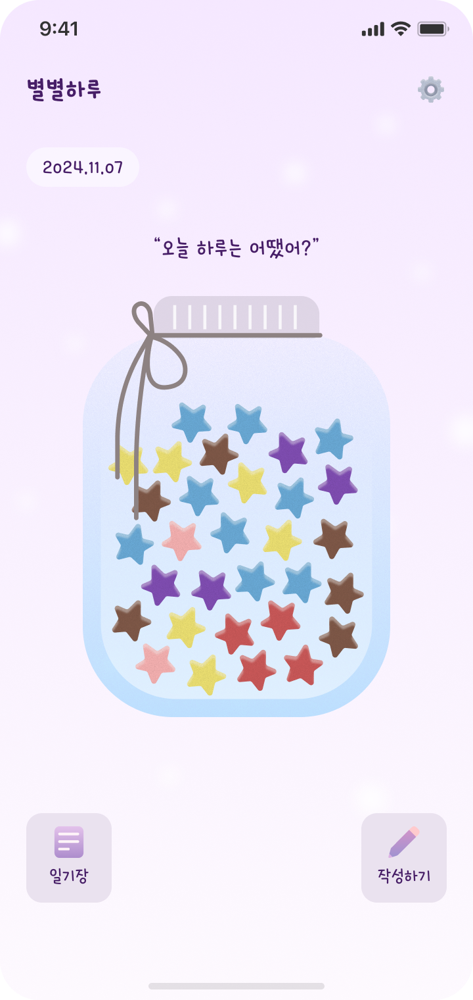
Light Mode
(2) Typography
Hakgyoansim
Font Size Class
- This is text-lg
- This is text-base
- This is text-sm
Font Weight Class
- This is font-normal
- This is font-medium
- This is font-semibold
- This is font-bold
Hakgyoansim
Font Size Class
- This is text-lg
- This is text-base
- This is text-sm
Font Weight Class
- This is font-normal
- This is font-medium
- This is font-semibold
- This is font-bold
(3) Tailwind.css
-
Tailwind.css
- Dark Mode
Tailwind CSS를 활용한 다크모드 구현은 단순한 색상 전환을 넘어, 구조적으로 확장 가능하고 유지보수에 강한 설계를 가능하게 합니다. dark: 유틸리티 기반의 명시적인 스타일 분기 방식은 전역 상태 관리와의 결합이 용이하며, 별도의 복잡한 CSS 분리 없이도 일관된 디자인 시스템을 유지할 수 있습니다. 또한 JIT 컴파일 방식으로 실제 사용되는 스타일만 생성되기 때문에 성능 부담이 적고, 상태 조합(hover, focus 등)까지 자연스럽게 확장할 수 있어 대규모 프로젝트에서도 안정적인 테마 전략을 구축할 수 있습니다.
(4) 간단한 회원가입
Toss 앱의 UX 패턴을 참고해, 입력 자리수가 고정된 정보의 경우 별도의 CTA 버튼 없이 즉시 다음 단계로 전환되도록 설계했습니다. 이를 통해 불필요한 클릭을 제거하고, 퍼널 기반 흐름으로 사용자의 인지 부담과
피로도를 최소화했습니다.
또한 입력 필드 진입 시점에 적절한 키보드 타입을 자동으로 호출하고 기본 Focus 상태로 설정해, 사용자가 추가 조작 없이 곧바로 입력에 집중할 수 있도록 구현했습니다.
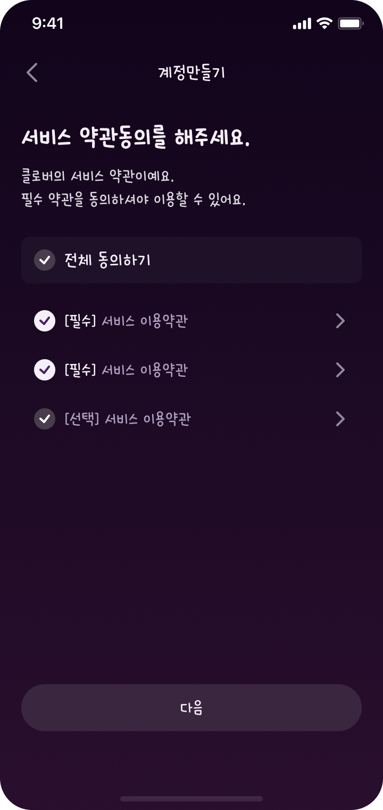
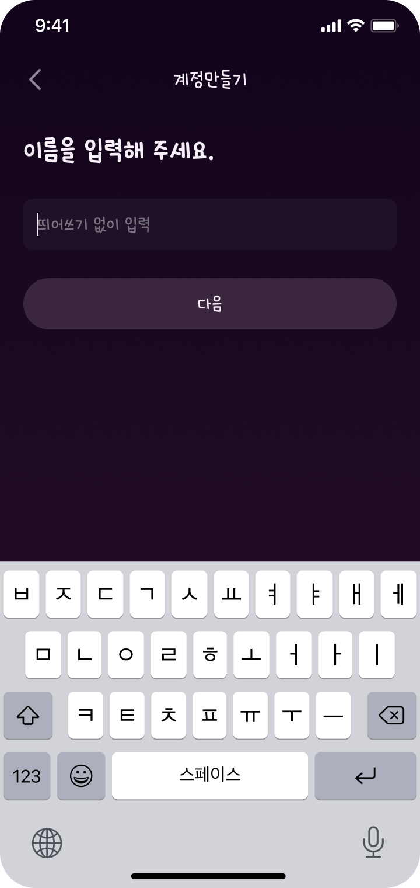
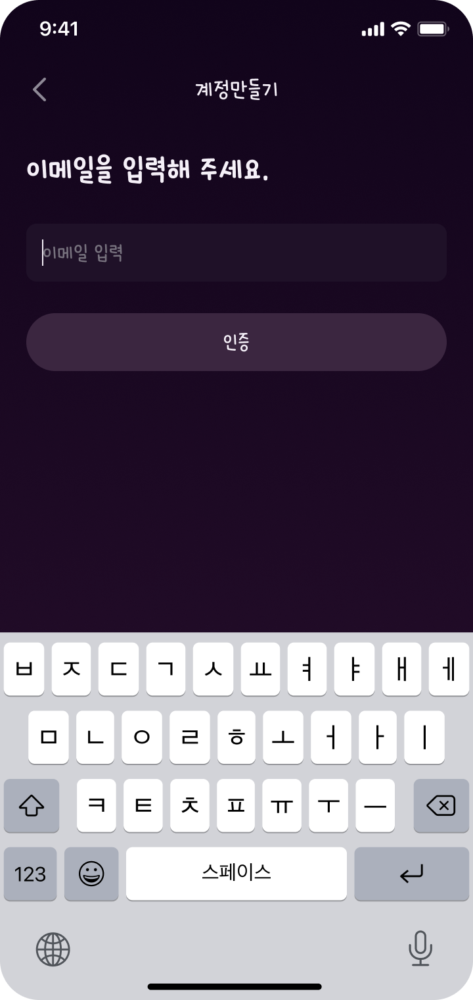
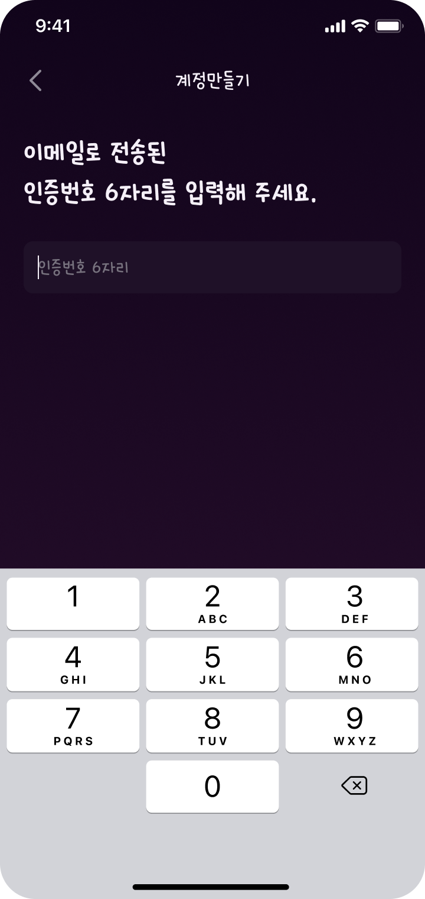
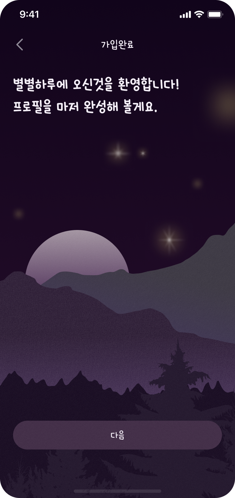
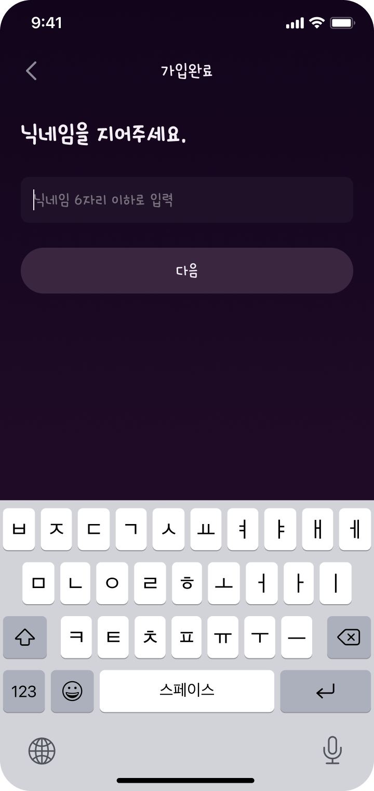
(5) 두가지 타입의 일기
질문형과 기록형 일기 기능을 함께 설계해, 평범한 하루를 보내더라도 질문형 일기를 통해 매일 별을 모을 수 있도록 구성했습니다.
또한 각 일기에 감정 상태를 함께 기록하게 하여, 사용자의 기분에 따라 서로 다른 별이
병에 차곡차곡 쌓이도록 경험을 설계했습니다.
더불어 일기를 캘린더형과 리스트형 두 가지 뷰로 제공해, 이번 달의 기록 현황과 감정 흐름을 한눈에 파악할 수 있도록 구성했습니다.
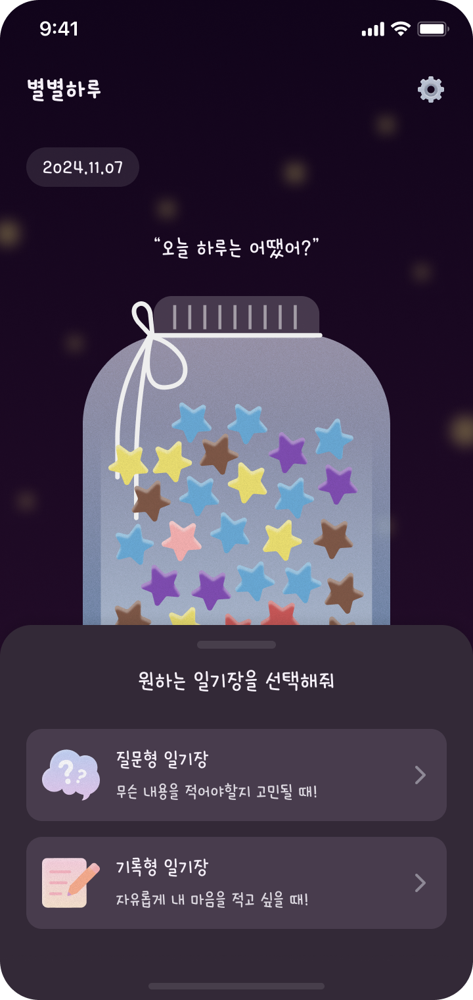
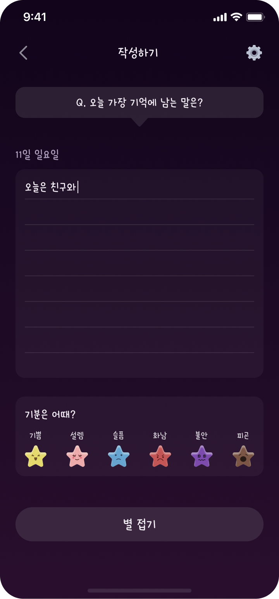
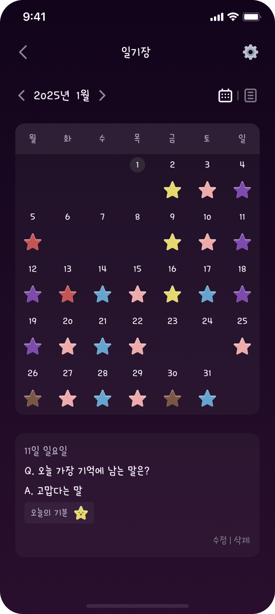
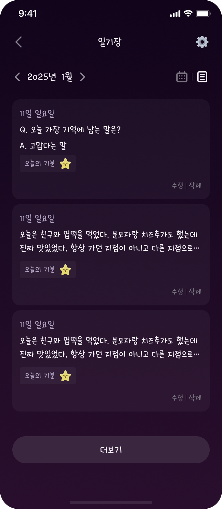
(6) 진입 비밀번호 설정
앱에는 기본 진입 비밀번호 기능을 제공하며, 설정 메뉴에서 잠금 기능을 활성화할 경우 사용자가 직접 앱 전용 비밀번호를 설정할 수 있도록 구현했습니다. 이를 통해 개인 기록에 대한 보안성을 강화하고, 사용자 프라이버시를 안정적으로 보호할 수 있도록 설계했습니다.
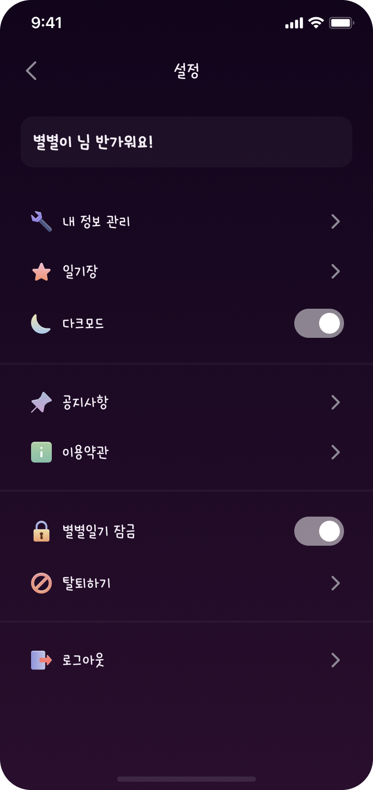
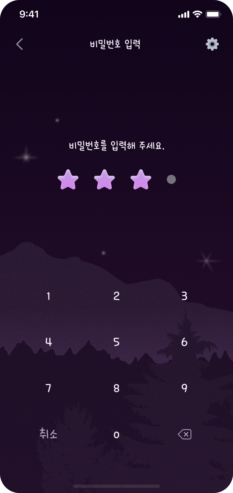